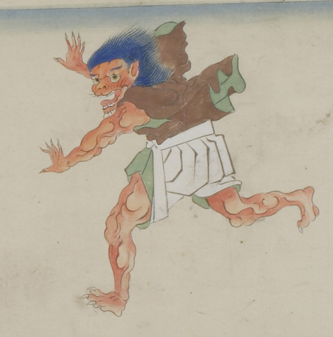

長谷雄から逃げる赤い肌の鬼。髪の毛は青く、逆毛立って後ろになびいている。眉毛も青く、両目は丸い。耳が尖っている。中央から裂けたような口を大きく開き、並んだ牙をむいている。口と顎にまばらにひげを生やしている。顔つきは獣のようである。足は3本指で、手足の指に鋭い爪が生えている。裏地が緑色の茶色の着物に白い袴をまとい、裾を絡げている。着物の両袖を脱ぎ、羽のように背からはためかせている。
著作者：福田太華写／出典：親書誌：U426_nichibunken_0061：長谷雄草紙；ハセオソウシ／日付：2006／資源識別子：U426_nichibunken_0061_0004_0000
Copyright (c)2010- International Research Center for Japanese Studies, Kyoto, Japan. All rights reserved.